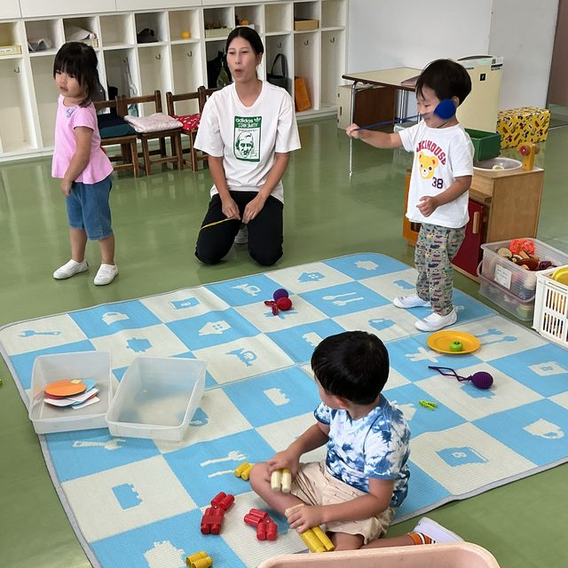
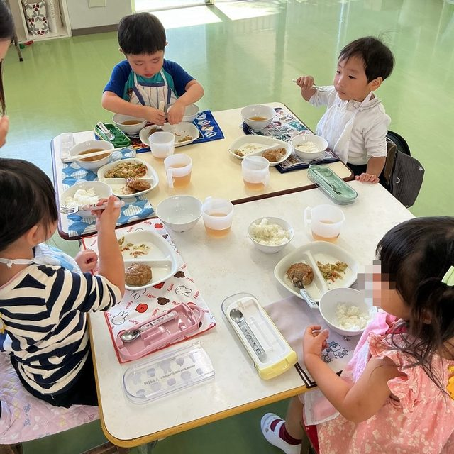

満3歳児保育
3歳のお誕生日を迎えたお子さまから入園できます
満3歳児保育について

満3歳児保育とは、年少組の1つ下の学年で、3歳の誕生日を迎えた方が対象となります。翌年度に年少組になるため、早めに幼稚園生活を始めたい、慣れてもらいたいという方におすすめです。
また満3歳児保育は、正式な入園となり、幼児教育の無償化の対象となりますので、保育料の負担はありません。
年少組の1つ下の学年翌年度に年少組へ
正式な入園早めに幼稚園生活を始められます
保育料の負担なし幼児教育の無償化の対象
満3歳児クラスについて
対象令和6年4月2日〜令和7年4月1日生まれ
令和8年度6月〜満3歳児クラスを始めました。誕生月の翌月から入園できます。
※現在も引き続き、今年度入園希望者の願書を受付中です。詳しくはお問い合わせください。
6月生まれ3歳のお誕生日
7月1日から入園入園可能です
【入園時期】満3歳を迎えた翌月から入園可能です
保育日週5日
保育時間8:45〜14:00最初の1週間は慣らし保育のため、11時半降園です
保育料無償満3歳児クラスに入った月から保育料は無償となります

わかば幼稚園ではプレスクールグリーンもありますが、そちらから年度途中で移行していただいても構いません。（満3歳児クラス入園をご希望の方は願書を提出ください。）
満3歳児保育とプレスクールグリーンの違い
満3歳児保育
保育日数
週5日
週1〜2日
保育時間
8:45〜14:00（保育終了後の預かり保育は要相談で受け入れ可）
9:15〜11:45（火・木）
10:00〜13:00（水）
10:00〜13:00（水）
保育料
幼児教育無償化の対象
月5,000〜8,000円
食事
月：お弁当
火〜金：給食
火〜金：給食
火・木：おやつ
水：お弁当
水：お弁当
見学は随時、対応しています。お気軽にお問い合わせください。
お気軽にお問い合わせください

学校法人わかば学園わかば幼稚園
〒464-0032 名古屋市千種区猫洞通2丁目13番地
見学は随時受け付けています。
お電話でのお問い合わせ052-782-3651受付時間 平日 9:00〜15:00